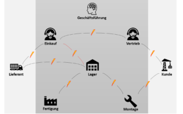
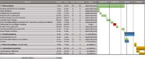
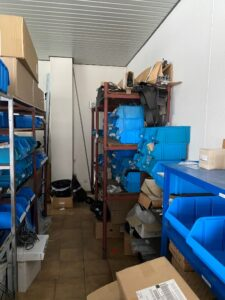
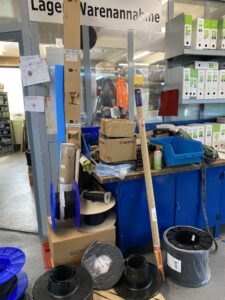
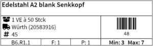
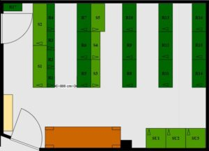
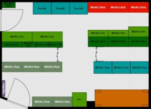

Fallstudie Lean Lager – Teil 1
Ein Metallbauer möchte sein Lager optimieren. Wir unterstützen ihn dabei und berichten darüber. Der vorliegende Teil 1 der Lean Lager-Fallstudie widmet sich der Planung der Maßnahmen im Lager. Im zweiten Teil wird es um die physische Umsetzung gehen.
Inhalt
Toggle
Abkürzungsverzeichnis
FMMA = Fertigungsmitarbeiter**innen und Monteure**innen
LMA = Lagermitarbeiter*innen
LVS = Lagerverwaltungssystem
MA = Mitarbeitende
Einführung
Das Unternehmen
Unser Kunde ist ein mittelständisches Metallbauunternehmen in Niedersachsen. Das vor über 100 Jahren gegründete Familienunternehmen befindet sich nach wie vor unter der Führung der Nachfahren des Gründers. Diese erbringen, gemeinsam mit insgesamt 30 MA, hochwertige Leistungen im Bereich Fenster-, Türen-, und Fassadenbau. Die Auftragsbücher sind aufgrund der hohen Produktqualität vollständig gefüllt.
Das Lager im Konfliktzentrum
Trotz voller Auftragsbücher gibt es Defizite im Bereich der Lagerprozesse. Doch wie zeigen sich diese Defizite? Das Unternehmen verwendet weder ein Kennzahlen- noch ein Lagerverwaltungssystem, aus dem es Kennzahlen generieren kann.
Die Defizite zeigen sich über Konflikte: Konflikte zwischen Lager und Fertigung, zwischen Lager und Montage sowie zwischen Lager und Lieferant. Im Konflikt stehen die unterschiedlichen Ziele der einzelnen Unternehmensbereiche.
Untenstehende Abbildung skizziert grob die wichtigsten Schnittstellen/Konfliktstellen, welche für das Lager relevant sind.

Beispiele für Zielkonflikte
- Die Fertigung möchte bauen. Dafür braucht sie Artikel. Diese sind im Lager nicht verfügbar, also wendet sich das Lager an den Einkauf. Der Einkauf möchte günstige Konditionen und bestellt deshalb lieber mehr, da z.B. Rabatte locken. Letztendlich verbleiben dann einige Artikel im Lager, da die Fertigung sie nicht direkt verbraucht. Das Lager, welches eigentlich geringe Lagerbestände möchte, überfüllt langsam mit Artikeln, welche FMMA nicht regelmäßig verbrauchen.
- Die Fertigung möchte bauen. Regelmäßig benötigte Artikel sind nur selten vorhanden, obwohl das Lager insgesamt voll ist. Deshalb entnehmen sie mehr, als sie eigentlich benötigen. Regelmäßig benötigte Artikel sind deshalb noch seltener vorhanden.
- Das Lager will nicht vorhandenen, obwohl regelmäßig benötigten, Artikeln vorbeugen. Deshalb legt es eine Excel-Liste im Lager aus (Symptombekämpfung). In dieser soll die Fertigung eintragen, wenn sie sich etwas entnimmt. Die Fertigung möchte bauen. In stressigen Situationen entnehmen sie sich die Artikel und tragen die Entnahme nicht in die Excel-Liste ein. Das Lager denkt, die Artikel sind vorhanden und bestellt sie fälschlicherweise nicht nach.
Im Konflikt steht lagerseitig der Wunsch nach weniger Artikeln (geringer Bestand), einkaufsseitig der Wunsch nach preiswerteren Artikeln (günstige Konditionen), fertigungs- und montageseitig der Wunsch nach den Artikeln, die FMMA grade benötigen (relevante Artikel).
Wenn also alle Bereiche getrennt voneinander ihre Ziele verfolgen, hat das Lager einen Überbestand an Unwichtigem und einen Unterbestand an Wichtigem. Bestellungen gehen raus, die nicht getätigt werden müssen. Bestellungen gehen nicht raus, die getätigt werden müssen.
Das Lager ist der Dienstleister der Fertigung und der Einkauf ist der Dienstleister des Lagers. Um einen verbrauchsgerechten Materialfluss zwischen diesen Bereichen zu gewährleisten, werden Andrea Kaden und ich bei unserem Kunden ein Pull-Prinzip (pull = ziehen) verfolgen. Die Fertigung „zieht“ die Artikelbestellungen. Ein Pull-Prinzip wird über das Kanban-Prinzip realisiert. Wie das Pull- und Kanban-Prinzip in der Theorie funktionieren, können Sie hier nachlesen. Wie wir das beim Kunden umsetzen, finden Sie im weiteren Verlauf der Fallstudie heraus.
Die genannten Umstände führen dazu, dass sich die Geschäftsführung des Kunden mit einer zunehmenden Unzufriedenheit der MA konfrontiert sieht. Dabei gibt jeder dem anderen Bereich die Schuld. Jeder Einzelne habe die Arbeit korrekt ausgeführt. Ironischerweise liegen alle gleichzeitig richtig und falsch: Alle haben ihre Arbeit, den Umständen entsprechend, richtig gemacht. Wie wir vorhin veranschaulicht haben, ist die richtige Arbeit der einen Abteilung nicht immer die richtige Arbeit für die andere.
Das Lager hat einen großen Querschnittscharakter. Es besitzt viele Schnittstellen zu den anderen Bereichen und steht fertigungsseitig im Fokus der Unzufriedenheit der MA.
Die Geschäftsführung wendet sich daher an Andrea Kaden und mich. Gemeinsam mit den Unternehmensbereichen schauen wir genau hin. Was sind die Konflikte, die zugrundeliegenden Probleme und deren Ursachen? Was sind nur Symptome?
Generelle Vorgehensweise
Die Lean-Lageroptimierung lehnen wir an die Struktur eines Lean-KVP Prozesses an. Das heißt wir benutzten einen PDCA-Kreislauf (Plan, Do, Check, Act).
Während der Planung (Plan) wird dabei zunächst eine umfassende Ist-Analyse zu Konflikten durchgeführt. Daraus leiten sich Probleme, Wünsche, Ziele sowie Lösungen und ein Projektplan ab. Die Planungsphase ist entscheidend für den Erfolg des Projektes, da bei fehlerhaften Analysen alle weiteren Maßnahmen auf falschen Annahmen beruhen und somit die Sinnhaftigkeit dieser Maßnahmen angezweifelt werden muss. Aus diesem Grund nimmt diese Phase die meiste Zeit in Anspruch.
Nachdem wir uns auf eine Lösung, den Soll-Zustand, einigen, beginnt die Umsetzungsphase (Do). Während dieser Phase wird die „eigentliche Arbeit“ durchgeführt. Anhand des Projektplans arbeiten wir konsequent auf das gemeinsam definierte Ziel hin. Für die zeitliche Dimension dient der Projektplan als Referenz und für die Zielerreichung die in der Planung definierten Ziele.
Ist der Soll-Zustand umgesetzt wird noch einmal genau hingeschaut: Wurden die gewünschten Ziele erreicht (Check)? Wenn die Antwort „Nein!“ ist, beginnt der Kreislauf mit der Planungsphase von vorne. Falls die Antwort „Ja!“ ist, was uns gelegen kommen würde, beginnt die Phase der Standardisierung (Act). Ein geschaffener Soll-Zustand darf natürlich nicht einfach wieder verschwinden. Deshalb werden die neu geschaffenen Zustände und Abläufe „in Stein gemeißelt“. Natürlich nur so lange, bis ein neuer/besserer Standard geschaffen wird.
Planung des Projekts
Der vorliegende erste Teil der Fallstudie beschäftigt sich mit der Planung des Projektes. Zum Abschluss der Planung liegen alle Informationen vor, um das Lager umzubauen und das LVS „scharf zu schalten“.
Projektplan und Art der Zusammenarbeit

Innerhalb des Projekts arbeiten wir mit dem Kunden in Trello. Das Programm dient uns als eine schlanke und zentrale Plattform für alle nötigen Informationen, Aufgaben und Diskussionen in der Zusammenarbeit. Ein Vorteil von Trello ist, dass Aufgaben nach dem Kanban-Prinzip abgearbeitet werden. Das Kanban-Prinzip wird bei der Umsetzung des Pull-Prinzips eine Rolle im Lager spielen. Deshalb ist es ein positiver Nebeneffekt, dass die MA bereits mit dem Konzept vertraut gemacht werden.
Alle Dateien sind in einem Ordner in Google Drive abgespeichert. Von hier aus werden sie an die in Trello abgebildeten Aufgaben angehängt. Deshalb kann jeder Projektteilnehmer über Trello direkt auf die zur Aufgabe relevanten Dateien zugreifen. Von überall aus. Die Folge ist, dass statt drei Programmen (E-Mail, Ordner, To-Do Listen) nur ein Programm für die Arbeit am Projekt geöffnet werden muss. Das spart Zeit.
Für den groben Ablauf orientieren wir uns bei der Projektarbeit an dem Projektplan. Auf der anderen Seite gibt es ein wöchentlich wiederkehrendes Zoom-Meeting. Hier nehmen wir Feinabstimmungen vor, legen wöchentlich Ziele fest und verfolgen diese Ziele bis zum nächsten Termin.
Analyse des Lagers
Wie sieht es aus als wir uns, gemeinsam mit dem Kunden, das Lager anschauen? Wie es meistens aussieht, wenn ein Lager und zugehörige Prozesse 117 Jahre vor sich hin wachsen.


In Anbetracht dieser Zeitspanne sieht das Lager, im Vergleich zu anderen Betrieben mit langem und unkontrolliertem Prozesswachstum, noch passabel aus. Auf dem Foto ist zu erkennen, dass mit Hilfe der blauen Sichtlagerkästen ein System geschaffen wurde, in dem durch Beschriftung eine Art Lagerfach mit zugeordnetem Inhalt definiert werden kann. Eine Änderung dieses Inhalts ist allerdings nur handschriftlich am Sichtlagerkasten selbst durchzuführen. Außerdem könnte so ein Kasten leicht verloren gehen, da in den eigentlichen Regalen keine Beschriftungen vorhanden sind. Dieses bereits nicht sichere System gilt allerdings nur für Kleineile. Alles was größer als die Sichtlagerkästen ist, wird nach „Gutdünken“ in nicht definierten Lagerfächern mit nicht definiertem Inhalt gelagert. Solche Gegenstände werden ebenso verloren gehen. Unter anderem deshalb, weil sie zwischen anderen Gegenständen nicht zu erkennen sind.
Begehungen und Befragungen der Geschäftsführung gemeinsam mit den FMMA/LMA geben weiteren Aufschluss über die aktuelle Situation über das Lager. Hier sind die wichtigsten Probleme sowie daraus abgeleitete Wünsche und Ziele aus den Befragungen der Konfliktbereiche:
Probleme
- P1: Unzufriedenheit mit Lagerorten
- P2: Nichtbenutzung vorhandener Artikel
- P3: Nicht vorhandene Artikel sind vermeintlich im Bestand und es erfolgt keine Bestellung
- P4: Aufwändige, lange Inventur mit handschriftlichen Listen
- P5: Platzprobleme
- P6: Artikelsuche dauert ewig
- P7: Aufwändiger, händischer Bestellprozess
- P8: Lagerperformance ist unbekannt
- P9: FMMA verlieren Zeit bei der Entnahme von Artikeln, da sie jede Entnahme in eine Liste eintragen müssen
Wünsche
- W1: Platzoptimiertes Lager
- W2: Digitale Nachverfolgung von Artikeln und Maschinen
- W3: Arbeiten mit Barcodes
- W4: Automatisierte Inventur
- W5: Projektbezogene Ein- und Auslagerung
- W6: Rechtzeitiger Verbrauch von Artikeln mit Verfallsdaten
- W7: FMMA müssen sich mehr auf ihre eigentlichen Aufgaben konzentrieren können
Ziele
- Z1: Erhöhung des Flächennutzungsgrades / Platzoptimierung
- Z2: Zeitreduktion beim Suchen von Artikeln
- Z3: Zeitreduktion der Inventur
- Z4: FMMA können sich frei an Artikeln bedienen → Pull-Prinzip / Kanban-Prinzip
- Z5: Reduzierung des Durchschnittsbestandes
- Z6: FIFO-Prinzip (First in – First out)
- Z7: Automatisierte Bestellungen
Im weiteren Verlauf dieser Fallstudie findet sich hinter Sätzen immer wieder z.B. „(Z3)“. Kurz gesagt bedeutet dies, dass wir mit der Maßnahme das in Klammern stehende Ziel verfolgen.
Entwicklung des Lager-Grundkonzepts
Für die Zielerreichung der Ziele 1-7 wird
- das bestehende Lager „entrümpelt“ und nicht benutzte Artikel aussortiert (Z1),
- das Lagerlayout verändert (Z1, Z2),
- ein LVS eingeführt (Z1-7),
- und ein Pull-Prinzip verfolgt (Z4).
Ein LVS unterstützt bei der Erreichung aller genannten Ziele. Nach umfassenden Recherchen entscheiden wir uns für IDALABS, eine modular aufgebaute und auf das Handwerk spezialisierte Software.
Wie soll die Lagerhaltung zukünftig aussehen? Und wie wird es möglich sein, dass sich FMMA frei an den Lagerartikeln bedienen können? Und warum ist das sinnvoll?
Im Grunde ist die Fertigung der Kunde des Lagers. Ein FMMA ist keine Lagerfachkraft. Dementsprechend halbherzig wird ein FMMA seine Lagertätigkeiten durchführen. Wer könnte es ihm/ihr verübeln? Sie wollen und sollen dem nachgehen, wofür sie sich berufen fühlen: Dem Handwerk. Dem Verändern und Zusammenführen von Materialien. Abgesehen davon sind FMMA nicht in Lagerungsthemen ausgebildet. Ein Metallbauer verdient Geld mit exzellenten Produkten und nicht mit dem Lagern von Artikeln. Ein exzellentes Produkt verlangt MA, die sich auf ihre Aufgaben konzentrieren und nicht ständig nach Artikeln fragen oder suchen müssen. Um das zu ermöglichen, wird ein einfaches, aber effektives Pull-Prinzip für Standardartikel geschaffen.
- Standardartikel sind günstige und mengenmäßig große Artikel wie Schrauben und Dübel, welche FMMA regelmäßig verbrauchen und kein straffes Ablaufdatum besitzen.
- Alle anderen Artikel sind Kommissionsartikel. Diese benötigen FMMA unregelmäßig und sind tendenziell teurer und sperriger.
Grundkonzept Standardartikel
- Jeder Standardartikel besitzt einen festen Lagerplatz (Z2)
- Der Lagerplatz ist über Etiketten (= Lagerplatzkennzeichnung und digitale Kanban-Karte) klar gekennzeichnet (Z2, Z3, Z4)
- Ein Schild am Eingang des Lagers gibt Aufschluss über den Lagerort eines Artikels (Z2)
- Der Platzbedarf eines Artikels ist durch den Maximalbestand so gering wie notwendig (Z1, Z5)
- FMMA entnehmen sich die Artikel, die sie benötigen (Z4)
- Ein LMA geht periodisch durch das Lager und gleicht den Meldebestand mit dem tatsächlichen Bestand eines Artikels ab
- Ist der Meldebestand erreicht, scannt der LMA die Etikette über IDALABS an (Z4, Z7)
- Der LMA dreht die Etikette um. Auf der Rückseite steht das selbe, nur mit dem Hinweis „BESTELLT“, damit er keine weitere Bestellung auslöst (Z4)
- Eine Bestellungsanfrage, mit der hinterlegten Bestellmenge, geht automatisch an den Einkauf (Z4, Z7)
- Der Einkauf gibt die Bestellung frei
- FMMA können sich weiterhin an dem Artikel bedienen, da der Restbestand bis zum Eintreffen der Bestellung ausreicht
- Die Bestellung trifft ein
- Der LMA lagert die Bestellung am vorgesehenen Lagerplatz ein und dreht die Etikette um
- Der Kreislauf beginnt von vorne (Z4)
Für die Inventur bedeutet das, dass die LMA das Etikett des Lagerplatzes abscannen und lediglich die Anzahl an Verpackungseinheiten eintippen müssen. Das System weiß, wie viele Einheiten sich in einer Verpackungseinheit befinden. Sie müssen maximal eine einzige angebrochene Verpackungseinheit manuell zählen und in der App eintragen. Die Inventur wird so deutlich schneller und stressfreier vonstattengehen (Z3).
Grundkonzept Kommissionsartikel
- Kommissionsartikel besitzen keinen festen Lagerplatz
- Sie werden auftragsbezogen über einen bei IDALABS angelegten Auftrag bestellt
- Jeder Auftrag besitzt eine einzigartige Nummer
- Bei Wareneingang werden Etiketten mit der Auftragsnummer gedruckt und an die Verpackungseinheiten angebracht
- Die Verpackungseinheiten werden anschließend in Kommissionsregale, je nach Auftrags-Endnummer, einsortiert
- Die Kommissionsregale sind von 0-9 nummeriert
- Folglich wissen die jeweiligen FMMA, wo Kommissionsartikel zum speziellen Auftrag zu finden sind (Z2) und können sich frei bedienen (Z4).
Planung zur Einführung des Lagerverwaltungssystems (IDALABS GmbH & Co. KG)
Um das IDALABS Materialwirtschafts-Modul erfolgreich einführen zu können, sind mehrere Schritte notwendig:
- Lagerbezeichnungen, Regalbezeichnungen definieren
- Zuordnung der Artikel zu Standardartikeln/Kommissionsartikeln
- Platzbedarf (Meldebestand, Bestellmenge) je Artikel bestimmen
- Zuordnung der Artikel zu Lagerplätzen
Dafür benutzen wir eine Übergabeliste, welche wir nach und nach füllen. Am Schluss übergeben wir diese dann an IDALABS.
- Die Lagerbezeichnungen werden nicht funktional, sondern logisch mit Abkürzungen definiert. Dabei besitzt jedes Gebäude auf dem Gelände einen Buchstaben, angefangen mit „A“ und im Urzeigersinn alphabetisch aufsteigend. Die Fertigung, in dessen Gebäude auch die Standardartikel liegen, besitzt den Buchstaben „B“. Da es sich im Erdgeschoss befindet, folgen die Buchstaben „EG“. Innerhalb des Gebäudes besitzen die Räume eine Nummer im Uhrzeigersinn von „1“ aufsteigend. Für die Lagerbezeichnung der Standardartikel ergibt sich so „BEG6“. Die Regalbezeichnungen hingegen sind funktional gehalten. „S1“ steht dabei für das Schraubenregal, welches aus Fertigungssicht am schnellsten zu erreichen ist.
- Zugeordnet wird nach Erfahrungswerten unterstützt mit Bestelldaten.
- Wird ein Artikel den Standardartikeln zugeordnet, wird es notwendig, dessen Platzbedarf zu bestimmen. Dieser ergibt sich wie folgt: Unser Kunde besitzt zum Zeitpunkt der Aufnahme noch kein LVS. Dies hat zur Folge, dass kein genauer Tagesverbrauch pro Artikel bestimmt werden kann. Aus diesem Grund wird mit einer von uns entwickelten Excel-Liste gearbeitet, die den Platzbedarf moderat schätzt. Nach Einführung des LVS und genauen Verbrauchsdaten, wird der Platzbedarf pro Artikel exakt berechnet werden, um den Lagerbestand weiter zu reduzieren.- Platzbedarf = Meldebestand (MB) + optimale Bestellmenge (OB)
– MB = Tagesverbrauch (Jahresverbrauch / 350) x Wiederbeschaffungszeit + Puffer
– OB = Wurzel aus [(200 x Jahresverbrauch x Bestellfixe Kosten) / (Lagerhaltungskostensatz x Einstandspreis)] – Lagerhaltungskostensatz = Lagerkostensatz + marktüblicher Zins
– Lagerkostensatz = (Lagerkosten) / (∅ Lagerwert) *100 [%] - Ist der Platzbedarf bekannt, können die Standardartikel den Regalen und Fächern zugeordnet werden. Dabei wird sortenrein einsortiert und alle Informationen in der Übergabeliste für IDALABS eingetragen:Sind all diese Informationen über einen Artikel bekannt, wird die Übergabeliste eingepflegt und IDALABS generiert daraus Lagerplatz-Etiketten:

„Min“ ist der errechnete Meldebestand und „Max“ der Maximalbestand. Die Min- und Max-Werte ergeben sich über die oben genannte Übergabeliste. Die Bestellmenge ergibt sich aus Max-Wert minus Min-Wert. Auf der Beispieletikette müssen bei 3 verbleibenden Verpackungseinheiten 4 nachbestellt werden.
Planung Soll-Lagerlayout
Für die Erreichung eines höheren Flächennutzungsgrades (Z1) muss entweder die Gesamtfläche verkleinert oder die genutzte Fläche erhöht werden. Aus verschiedenen Gründen aber vor allem, weil wir unserem Kunden keinen Umbau des Gebäudes zumuten wollen, soll an der Stellschraube „genutzte Fläche“ gedreht werden. An dieser Stelle wird nicht auf das gesamte Lager, sondern auf das Lager für Standardartikel eingegangen.


Nach mehreren Vorschlägen verschiedener Layouts einigen wir uns auf ein neues Layout (rechts). Mit Hilfe einer Neuanordnung der aktuellen Regale (90° gedreht, Mittelgang, Gangbreitenreduzierung, Stapelung der Bohr-Schränke SU2/SU3 auf SU1) schaffen wir ein übersichtlicheres und platzoptimiertes Lagerlayout.
Am Abschluss der Planung liegen uns alle nötigen Informationen gebündelt in einer Liste vor, die wir anschließend IDALABS übergeben. Damit ist Zeit für die Bestellung neuer Regale für Standardartikel, Kommissionsartikel und Etikettenhalter.
Wie das Ganze „in Action“ aussieht, finden Sie in Teil 2 der Fallstudie heraus.
Weitere Artikel

Digitale Tools für Zusammenarbeit im Office
E-Mail, Digitale Ablage und eine Branchensoftware sind schon lange nicht mehr genug für effiziente Zusammenarbeit. Doch bevor Sie sich in einem Dschungel an digitalen Werkzeugen verlieren, sollten Sie sich über die Systematik …

Kollaboration im Office mit Kanbanize
Ein Tool, was mich für die digitale Kollaboration im Office begeistert ist Kanbanize. Dort kann man wirklich sehr fortgeschritten und smart zusammenarbeiten. Mit seinen verschiedenen Perspektiven auf den Flow im Office, der …